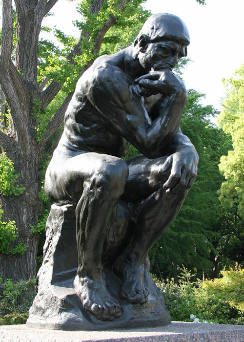

KEHIDUPAN
Anugerah terindah yang pernah ada. Walaupun, banyak juga yang menyebut bahwa kehidupan adalah Kutukan. Kalimat tersebut keluar dari mulut dan otak yang notabenenya adalah instrumen kehidupan milik Manusia. Sangsi. Ketika kalimat tersebut keluar dari mulut domba maupun dari venus si pemakan serangga.
"Aku Berfikir Maka Aku Ada" "I think Therefore I Am"
"Cogito Ergo Sum" "Je Pense donc Je Suis""
Apakah KEHIDUPAN memiliki arti atau nilai ataupun makna?
Sayang Sekali Jawabannya Ialah: "Tidak Ada"
"Manusia Dikutuk Untuk Bebas"
Kehidupan kita tidak memiliki arti, nilai, maupun makna.
Namun, kita BEBAS mencari atau membuat makna kita sendiri.
Hasrat memenuhi pertanyaan Filosofis.
FILOSOFI
Aktornya adalah Filsuf. Aku kira FILSUF adalah seorang pemikir yang sudah memiliki produk pemikirannya sendiri, menerbitkan atau mematenkan aliran pemikirannya. Salah. Itu adalah persepi yang salah dari dualisme FILOSOFI. Filsuf bukanlah orang-orang terkenal yang sudah merumuskan suatu aliran pemikiran miliknya sendiri seperti Democritus dengan aliran Alam miliknya, Homer dengan aliran Mitos miliknya, Socrates dengan aliran Kemanusian miliknya, sampai Nietzche dengan aliran Nihilisme miliknya.
"KITA SEMUA ADALAH FILSUF"
Selama kita terus berfikir dan menghasilkan pemikiran milik kita sendiri sampai mencapai KEBIJAKSANAAN tanpa perlu dipatenkan ataupun diterbitkan dahulu pun, kita semua, MANUSIA, adalah filsuf.

MANUSIA
"Apa Itu Manusia?"
"Siapa Itu Manusia"
"Definisi Manusia Itu Seperti Apa?"
Manusia terdiri dari HITAM dan PUTIH. Namun, warna tersebut sudah menyatu menjadi satu. MONODUALISME. Manusia itu pria sekaligus wanita, baik sekaligus buruk, x sekaligus y, biasa sekaligus luar biasa. Di Dalam Satu Tubuh. Persona kita ditentukan oleh diri sendiri dan persepsi manusia lain. Memiliki emosi, intuisi, sekaligus kognisi. Terbatas. Lemah. Tidak Sempurna.
Apapun itu...
Sederhananya:
"Manusia adalah Makhluk yang Kompleks""
" UNIK "
[ SAMA Sekaligus BERBEDA ]